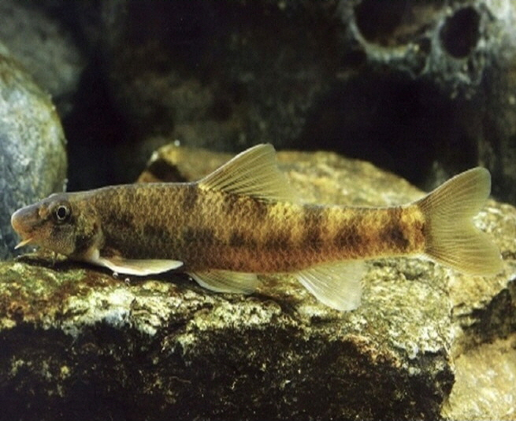

돌상어

주요특징 및 설명
종명: 돌상어(Gobiobotia brevibarba)
학명: Gobiobotia brevibarba
생물학적 분류: 잉어과 꾸구리속
분포: 한국 고유종(한강, 금강, 임진강)
등급: 멸종위기종 Ⅱ급
주요 특징
돌상어는 몸은 약간 길고, 배는 편평하며 등쪽은 둥글다.
4쌍의 입수염이 있다. 주로 유속이 빠른 1급수에서 서식하며,
수서곤충을 먹고 산다. 산란기는 4∼5월로 추정된다.